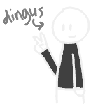

about the webmaster
go back
cvni81
- i speak: pt-br, en, tok
- pronouns: they/them
- age: under 18
- i like: chatting in Discord, listening to music, composing stuffs in beepbox, doodling things and very rarely writing.
I'm not that used to talking this much about myself but i'm gonna try.
I go by cvni81 and this is my place where i do things.
I have/had a lot of interests including but not limited to:
Old television IDs, flags, design, collecting old coins, drawing, making things in blender, and probably
a bunch of other things i'm forgetting.
Oh, and coding! (i'm doing it right now) I do a bunch of stuffs in python and pygame, maybe i'll put them here someday.
My gender is weird so... non-binary
That's pretty much it.